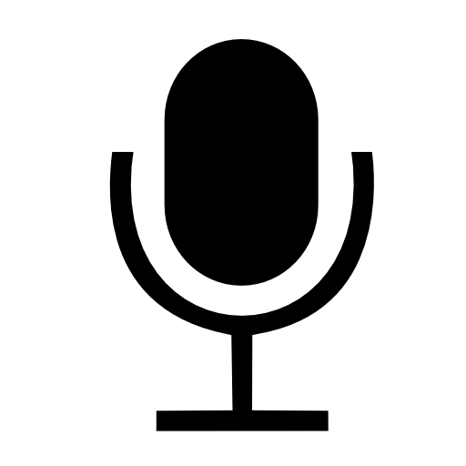

ExperiVid
Camera View
Match the Pose

(Press "Enter" to take a screenshot, or click the mic to begin voice recognition.)
Modal title
×
...
Directions
Select an image below to pose as and click "Apply Now".
With the image overlayed on your camera, stand back and pose as the character.
Whenever you are ready, press "Enter" to take a screenshot! (You may do this as many times as you want)
Alternatively, you may click the mic each time you wish to take a screenshot and say "take" when positioned
If at any point you want to save your screenshot, press "Shift"